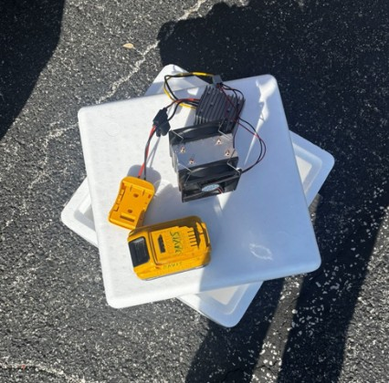
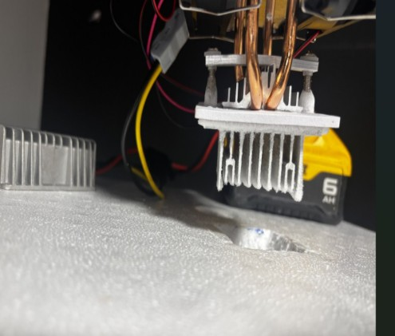
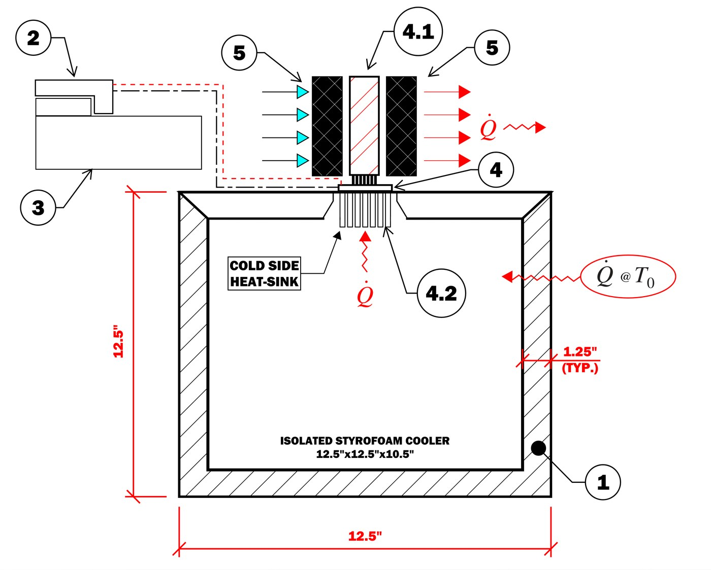

Thermodynamics project, University of North Florida, Spring 2026. Built and tested it.
The project was to build a refrigerator from leftover supplies and a prefabricated cooler, with two stipulations: no liquid cooling and no pressurized systems. The goal was to keep a refrigerant standard, reaching 40°F or lower without overheating or creating a hazard.
Why a Peltier module
Vapor-compression refrigeration, the kind in a home fridge, needs a compressor and pressurized refrigerant, so the rules ruled it out. Evaporative cooling depends on humidity and adds moisture, which is bad for food. That left thermoelectric cooling: a Peltier module moves heat from one side to the other using only electricity, with no fluids and no moving parts apart from the fans.
The build
I cut a beveled square opening in the Styrofoam lid and fit the Peltier module there, with a heat sink on the cold side inside the cooler and a heat sink and fan on the hot side outside. Insulation tape and double-sided adhesive sealed the gaps around the module. A 20 V battery fed a 20-to-12 V transformer to power it, within the 12 V DC limit.

The assembled module on the lid, wired to the battery.

The cold-side heat sink sitting in the opening cut into the lid.

My design drawing. Heat is pulled out through the cold-side heat sink and pushed out the top, while some heat keeps leaking in through the walls.
How I tested it
I let the cooler sit in a room until it matched the room temperature, confirmed 12 V with a multimeter, then powered it on and read the inside temperature at set intervals. I also measured the current drawn so I could calculate power in, and logged everything in Excel.
Test 1: 120 minutes
Test 2: 16 minutes
Results
73.2°F to 52.7°FTest 1, over 2 hours
Missed 40°FThe target I set out to reach
COP 0.12 to 0.16Across the two tests
Under 1%Second-law efficiency
The refrigerator worked, but not well enough. It cooled the inside by about 20°F, and cooling slowed as it approached steady state. It never reached the 40°F requirement.
I compared the actual coefficient of performance (COP) with the ideal Carnot limit for the same temperatures. Test 1 drew 48.5 W (12 V at 4.04 A) and removed about 7.9 W of heat, for a COP of 0.164 against a Carnot limit near 25. That gap, under 1% second-law efficiency, is how much real losses cost me.
What held it back
Heat leaking in through the Styrofoam walls was the largest load, bigger than the cooling the single module could deliver.
One Peltier module was too small for a cooler this size.
Heat built up on the hot side, which reduces how well the module works.
The cold side iced over quickly in every test.
What I would change
A larger cold-side heat sink with fans.
More Peltier modules, or a smaller enclosure.
A better seal around the module opening and the lid rim, to cut leakage and irreversibility.
Tools
Peltier module, heat sinks and fans, multimeter, thermometer, Excel for data and thermodynamic calculations (heat transfer, COP, entropy generation, irreversibility).